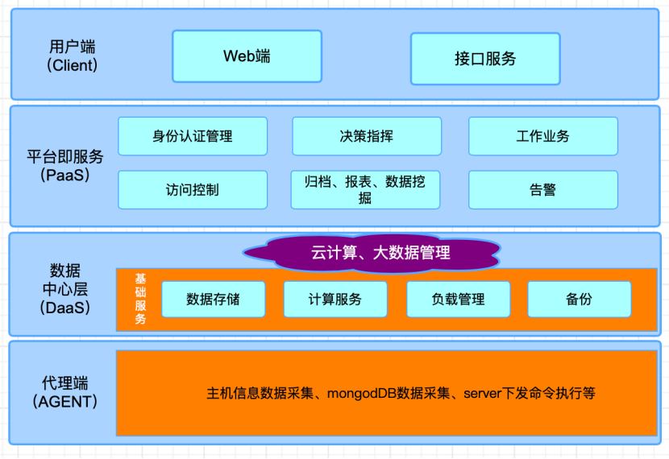

Whaleal Platform Introduction
Whaleal Platform (WAP) 是一个智能化的运维托管平台,完成 7*24 不间断地监控、管理。
WAP 是一个开源的 MongoDB 数据库监管控解决方案，它将对MongoDB进行故障排除、诊断等操作。
Architecture Introduction

系统的架构图描绘了系统的整体结构，它反映了系统各个模块之间的关系。
功能模块划分就是经过层层分解，把一个复杂的系统划分成为多个功能单一的功能模块。
根据对系统的功能进行分析整理，总结出数据共享交换系统的具体功能模块.
WAP Feature
- WAP 可高度自定义地将 MongoDB 节点按照业务/数据/安全要求快速部署。
- WAP 全局把控每个 MongoDB 节点，精准感知。
- WAP 通信加密，保证数据安全隐私不泄露。
- WAP 审计操作日志，确保历史回溯有根有据，进一步缩短排障时长。
- WAP 关联时间组日志，明确操作之间的关联依赖关系。
- WAP 关联 Host 监控与 MongoDB监控，关联排查、深入浅出。
- WAP 支持 MongoDB 实时诊断、Slowest Operation、 Explain等。
- WAP 被注入了我司多年 MongoDB 使用、运维等经验。
WAP Road
- WAP 添加自动巡检功能
- WAP 添加智能诊断模块
- WAP 添加数据归档模块
- WAP 添加数据实时迁移模块
- WAP 逐步打通AWS、GCP、Azure、阿里云、华为云、腾讯云等
- WAP 逐步支持其他主流发行版OS
- WAP 性能进一步优化
- WAP Fix Bug